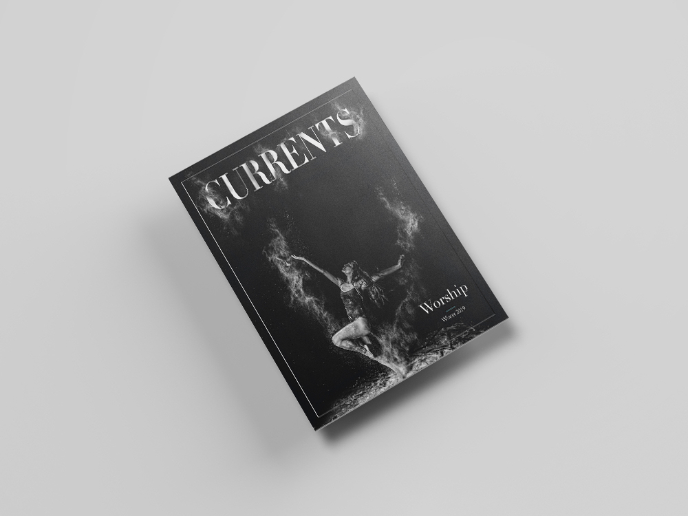
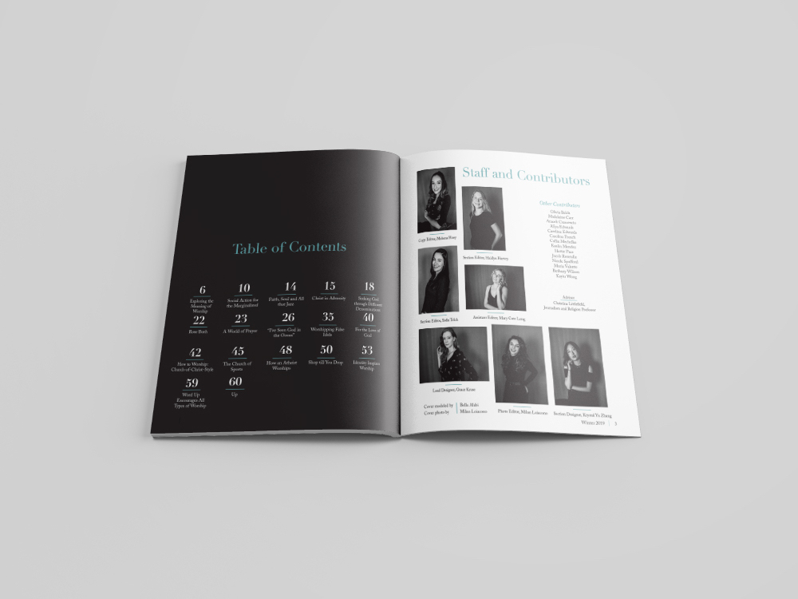
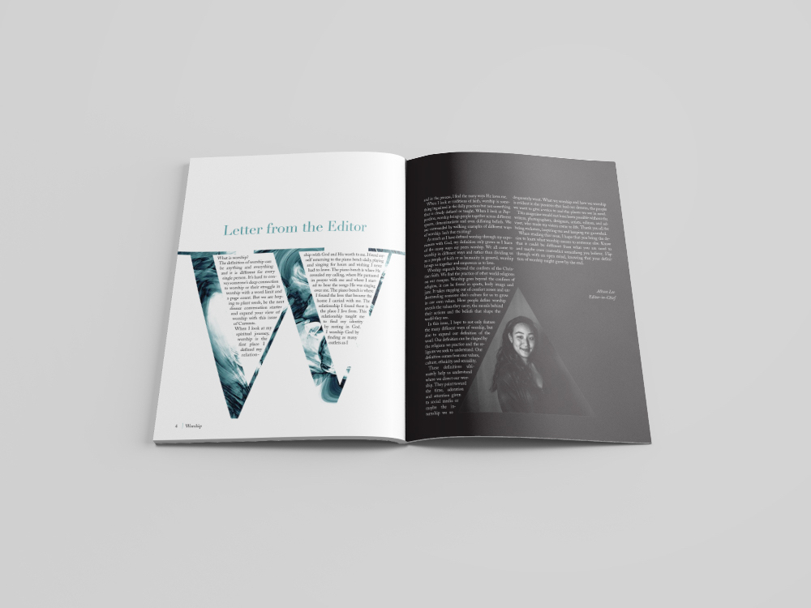
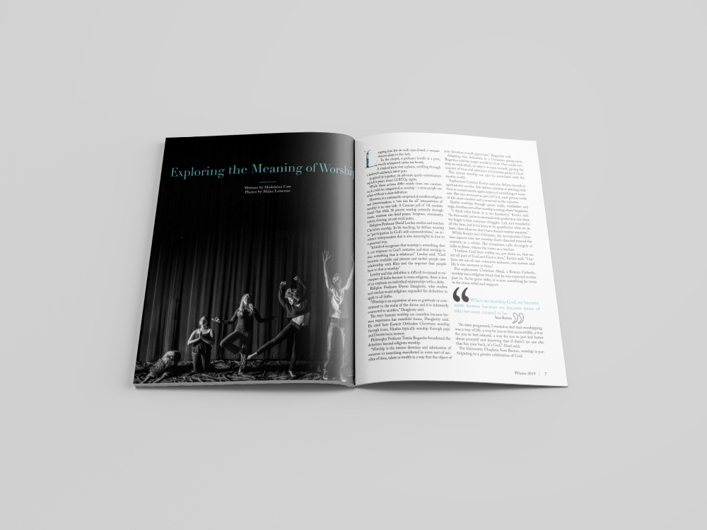
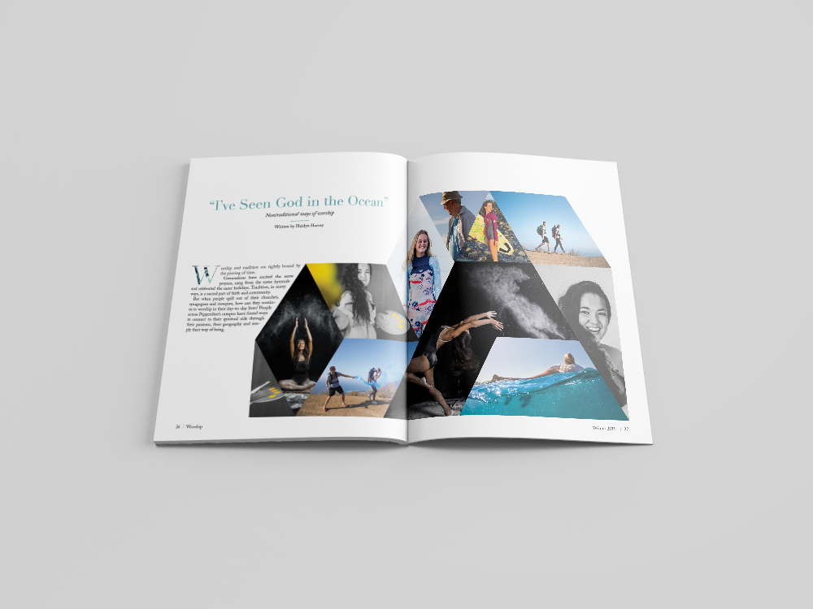
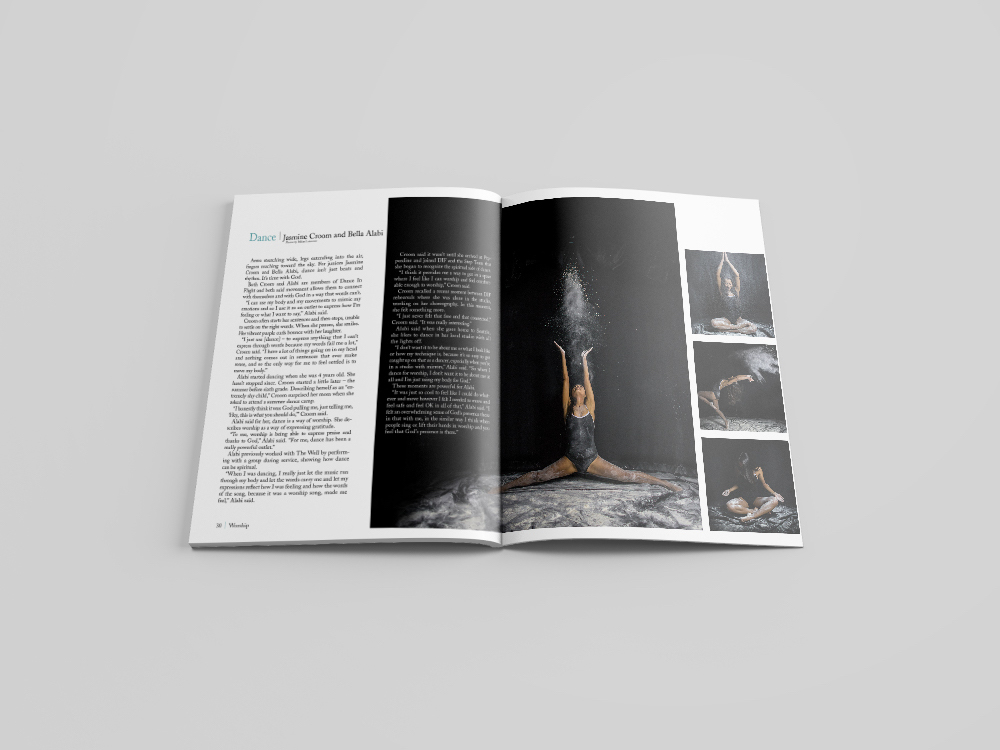

I've always said that being a designer is like creating one of Immanuel Kant's universal laws. You "act only on that maxim through which you can at the same time will that it should become a universal law". In design terms, that means only create a design rule if it could be used on every page, anywhere, by any person, and have it look as though it belongs. The theme for the first magazine I designed was "Worship". Although the content explored a variety of ways to worship, I wanted to keep my style traditional with serif fonts and peaceful colors. The goal was to see if I could create a design system that could be as detailed as a universal law.






This magazine represents my first attempt at creating a comprehensive design system based on the principle of universal laws. Every design decision was made with the intention that it could be applied consistently throughout the entire publication while maintaining visual harmony and readability.
The traditional serif typefaces and peaceful color palette were chosen to complement the theme of worship. The goal was to create a calming, contemplative reading experience that honored the diverse perspectives on worship explored in the content.
Want to read more? Click here to view the full magazine on Issuu.